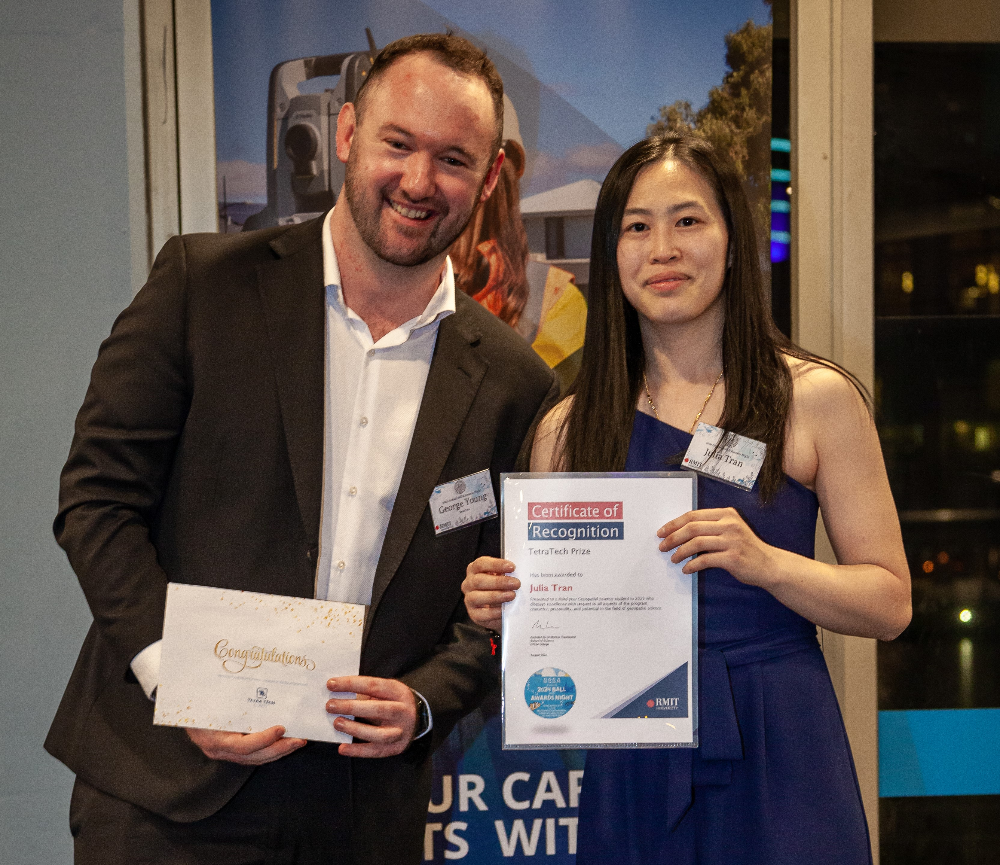
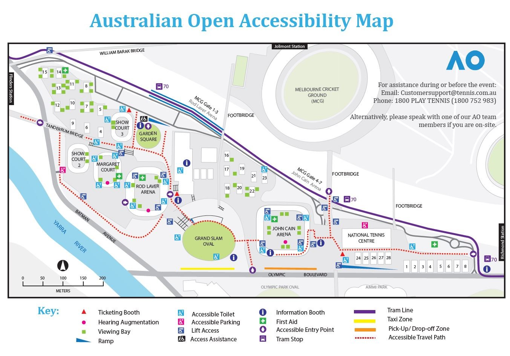
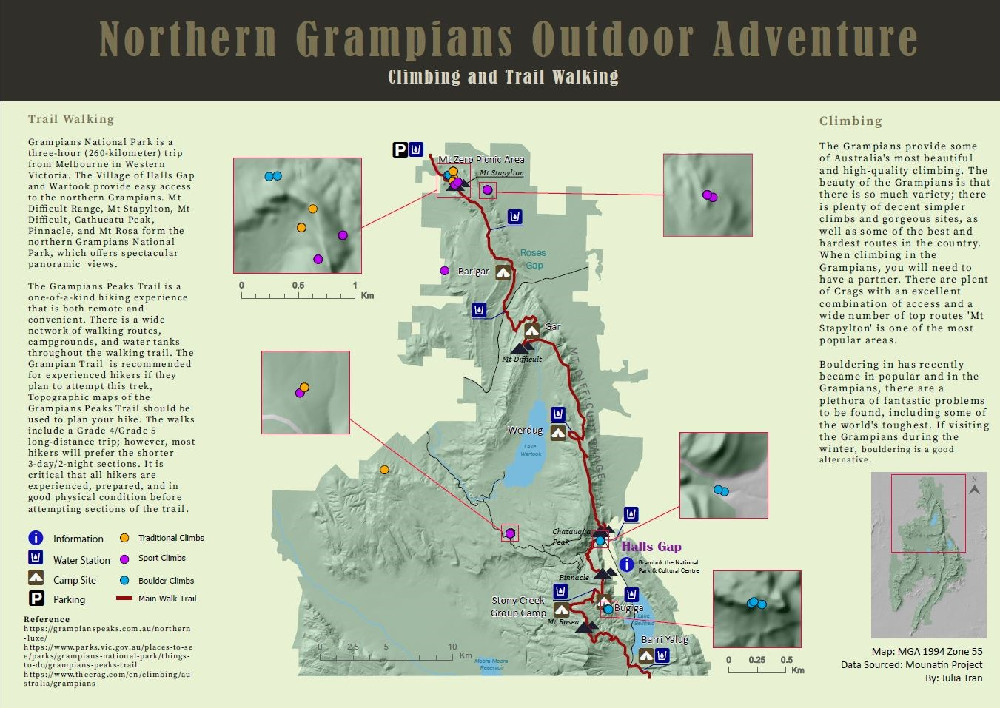
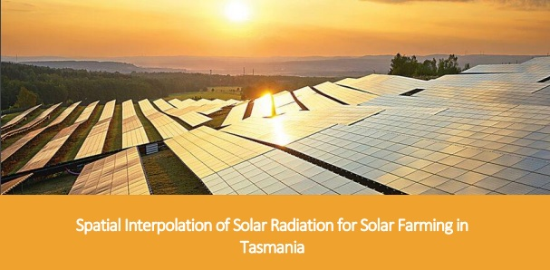

About Me
I am highly motivated geospatial science professional currently pursuing
my Bachelor of Science (Geospatial Science) with Honours at RMIT
University. Currently in my final year doing my honours on a Time -
Series Characterizing Spectral Trajectory of Riparian Vegetation Using
Landsat 8 Imagery. My expertise includes cartographic design, spatial
database management, and remote sensing, with proficiency in tools such
as ArcGIS Pro, Adobe Illustrator, and QGIS. My hands-on experience as a
GIS Intern at DEECA and a Student GIS/Surveyor at Aurecon Group, where I
have developed a strong foundation in spatial analysis and data
management.
I have been recognized for my academic excellence with awards like the
Jacob Prize and the Tetra Tech Prize, reflecting my dedication to the
field. In addition to my technical skills, I have a strong background
in project management, critical thinking, and problem-solving, which I
apply to both my professional and extracurricular activities.
Outside of my academic pursuits, I enjoy playing the cello and recently
joined a beginner orchestra at SQUAWKESTRA to develop my collaboration
skills. I am also passionate about ice hockey, playing at a national
level for the Melbourne Ducks during the 2024/2025 season and part of
the Demons Ice Hockey club as the teasurer. Additionally, I have a love
for outdoor adventures, from hiking to climbing, which allows me to
connect with the natural world.

Academic Portfolio Overview
Cartography
Studying Cartography at RMIT University, I was able to delved into the
complex and evolving field of map-making. I began by learning the basic
principles of cartography, which included understanding map resources
and exploring contemporary mapping products. This foundation of
knowledge allowed me to understand various methods of transforming the
physical environment into detailed map products grasping the key
elements of effective map design. As I advanced in my studies, I
developed professional map-making skills, enabling me to design
imformative and accurate maps using a range of spatial data. Working
with ABS datasets to Vicmap datasets, my experience at RMIT equipped me
with the expertise to create maps that are not only technically sound
but also visually compelling. Below are some topics that I have covered
in the Cartography classes:
Topic 1: Australian Open Accessibility Map

Topic 2: Northern Grampians Outdoor Adventure

Topic 3: Laneway Resturants and Bars - Near Theatres

Spatial Analysis
My major spatial analysis project is on spatial Interpolation of Solar
Radiation for Solar Farming in Tasmania. Doing these projects has helped
me developed me skills in inetegration of different datasets,
indentifying spatial patterns, provide insight and support for policies
and decision making. This study evaluates the suitability of solar
farming in Tasmania through the application of spatial interpolation
techniques, specifically Kriging, to analyze solar radiation and
rainfall data over a 12-month period. Utilizing data from the Bureau of
Meteorology, the research identifies the most appropriate regions for
solar farming based on a comprehensive spatial analysis. Results
indicate that 57% of Tasmania is suitable for solar farming, 27% is
unsuitable, and 16% is moderately suitable. The findings provide
valuable insights for local governments, businesses, and farmers,
offering recommendations for optimizing solar energy investments and
guiding policy development in renewable energy infrastructure.

Web map
I developed a strong foundation in cloud-based open-source GIS by
building my own spatial database through PostGIS and PostgresSQL and
exploreing the topic of urban heat islands (UHI) and vegetation in
Melbourne. This involved utilizing various systems and tools, including
GitHub, Azure, QGIS, GeoServer, and Leaflet, to create an interactive
web map, demonstrating the integration of cloud services and open data
for geospatial analysis. The project architecture followed a three-tier
structure, ensuring efficient data management with PostGIS, seamless
deployment through GeoServer and Azure, and user-friendly visualization
using Leaflet.
Industry Experience
This section provides an overview of my work experience in the
geospatial science industry, focusing on my roles at two key
organizations: Aurecon Group and the Department of Energy, Environment,
and Climate Action (DEECA). I will detail the experience I gained and
the skills I developed during my time with these companies.
Aurecon Group
GIS/ Surveying Student
February 2022 - July 2023
During my time with Aurecon, which began in February 2022, I aimed to
immerse myself in the GIS and surveying industry, as it was my first
experience in this field. I worked on a range of tasks that helped me
develop a basic understanding of both technical skills and industry
practices.
In the Surveying department, I focused on rail extraction using
MicroStation, a CAD software platform. My work involved processing
point clouds and using Topdot to draw lines and identify features such
as platforms, buildings, rail tracks and embankments. This process was
crucial for creating Digital Terrain Models (DTMs) to analyze
elevation levels in the withn the rail corridor. I;ve also been out in
the field Conducting fieldwork to perform comprehensive Feature
Surveys in and performing Levelling Surveys in the field to ensure
accurate elevation data
In the GIS department, I worked extensively with DBYD (Dial Before You
Dig) documents, organizing and georeferencing various sites using ArcGIS
Pro. This task required digitizing underground assets such as
telecommunications networks, pipelines, NBN cables and more.
Department of Energy, Environment and Climate Action
Geospatial Intern
August 2024 - Present
During my internship, which began in August 2024, I worked on creating
detailed datasets for infrastructure on public lands using ArcGIS Pro.
I carefully attributed the data, ensuring all fields were accurately
completed, utilizing Google Maps to provide further reliable
information. This effort was aimed at making structures easily
identifiable in case of emergencies. Additionally, I digitized and
attributed infrastructure points in the Mt. Baw Baw area, focusing on
mapping and accurately maintaining records of various infrastructure
features, ensuring up-to-date data for efficient management.
Skills and Proficiencies
 |
GIS Analyst |
 |
QGIS |
|
ArcGIS PRO |
 |
Drone and Mapping |

|
Cartographic Principles |

|
Adobe Illustrator |

|
Remote Sensing |
 |
Suverying |
 |
Web Design: HTML |
 |
Web GIS |
 |
Python Programming |
 |
SQL Database Management |
Credits and Attributions
The following programming languages and software were used to create
the website
- HTML
- CSS
- JavaScript
- Visual Studio Basic
The deliverables contains content from the following subjects:
- Cartography 1 (GEOM2077)
- Cartography 2 (GEOM2079)
- Spatial Information Science Principles (GEOM1044)
- Cloud-based open source GIS (GEOM2138)
Special thanks to the following people who have helped me make this
website with their expertise and guidance:
As per the policy of using the Flaticons with a free account, the
attributions and crediting of the creators of the icons are as below:
Attributions of icons used: